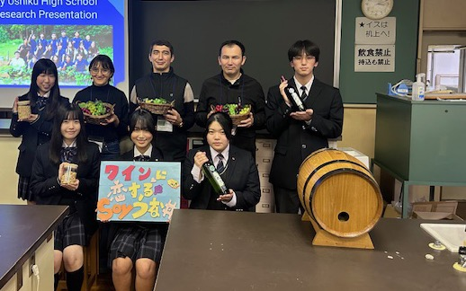
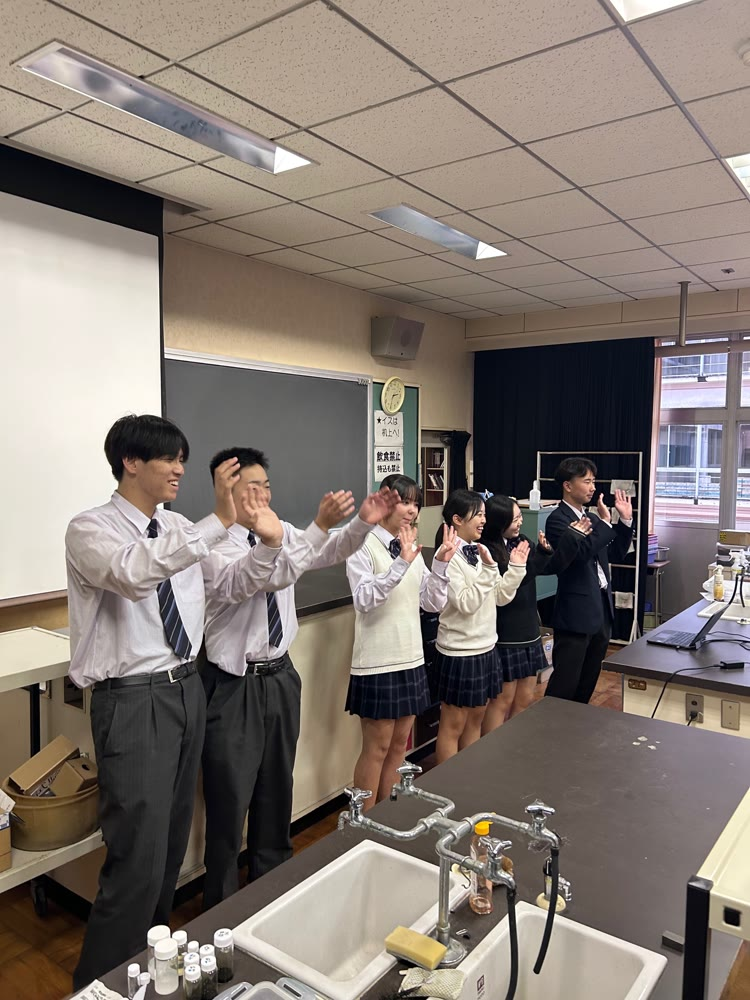
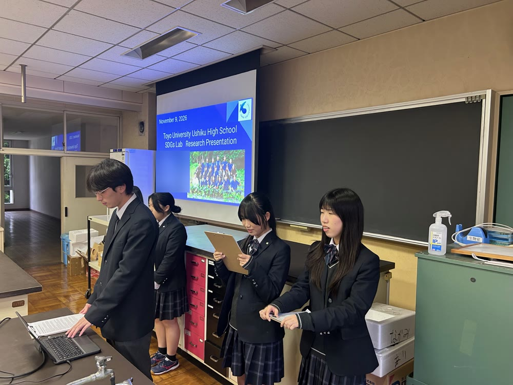
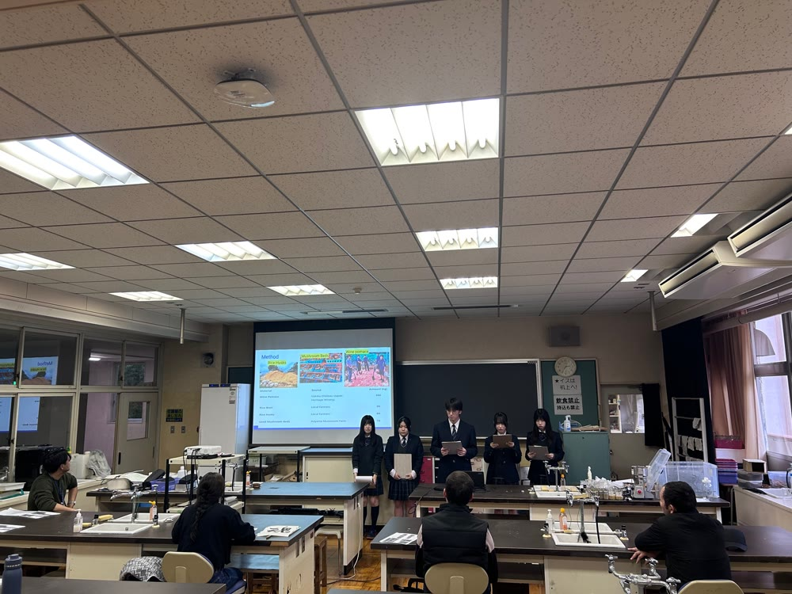

JICA長期研修員3名が来校 ― 書道体験・文化交流・研究発表
11月9日(月)、JICA(独立行政法人国際協力機構)の長期研修員3名(トルクメニスタン2名、ボリビア1名)を本校にお迎えし、国際交流を行いました。1年K組、2年K組、SDGs Labの生徒が…
全文を読む
11月9日(月)、JICA(独立行政法人国際協力機構)の長期研修員3名(トルクメニスタン2名、ボリビア1名)を本校にお迎えし、国際交流を行いました。1年K組、2年K組、SDGs Labの生徒が参加しました。SSH指定校として、地域の国際協力機関であるJICAと連携し、開発途上国への理解を深めて地球規模で考える力を育てることをねらいに企画したものです。書道体験では研修員1名に生徒2名がバディとなり、書道室で一緒に筆を執りました。4限は1年K組、5限は2年K組で、研修員が母国を紹介し、「世界の諸問題」をテーマに英語で意見交換をしました。生徒は現地の文化や社会、課題を直接聞き、英語を実際のコミュニケーションの道具として使いました。 昼食もバディと一緒にとりました。
午後は生物室で、SDGs Labの生徒が研究発表をしました。 大豆班は、トルクメニスタンとボリビアがどちらもワインの生産国であることにちなんだ内容です。ナガエツルノゲイトウ班は、地域の水辺で問題となっている外来植物ナガエツルノゲイトウを扱いました。南米原産のこの植物は、ボリビアも原産国の一つです。海外の方に研究を聞いていただき、その意義や世界での応用の可能性を考えるきっかけになりました。発表後は同じ生物室で記念撮影をしました。本校はこれからも、地域と世界を結び、新たな価値を創造するグローバルリーダーの育成に取り組みます。